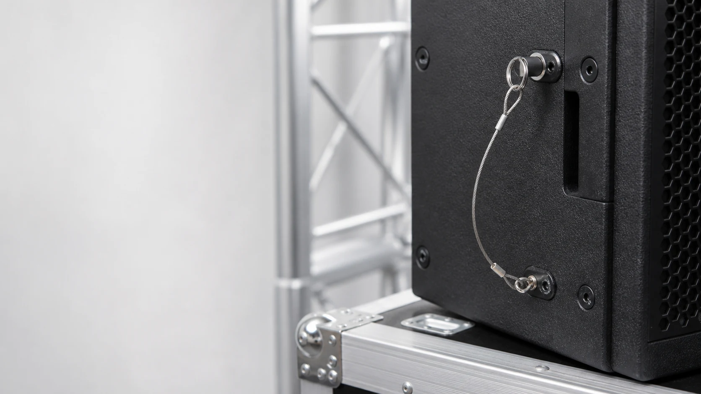
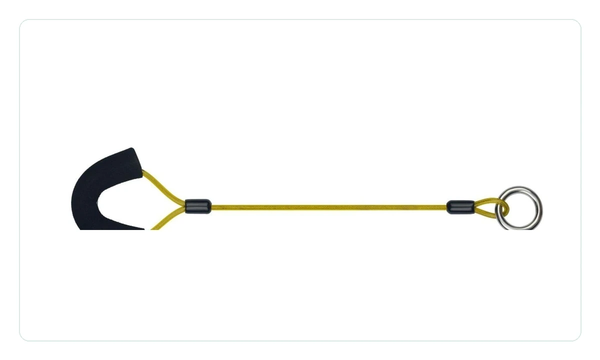
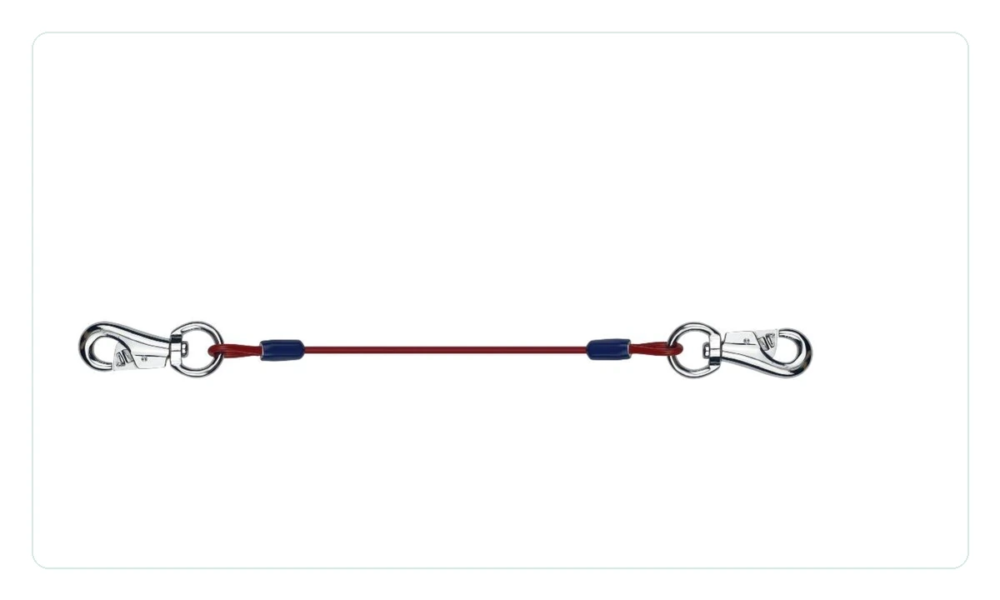
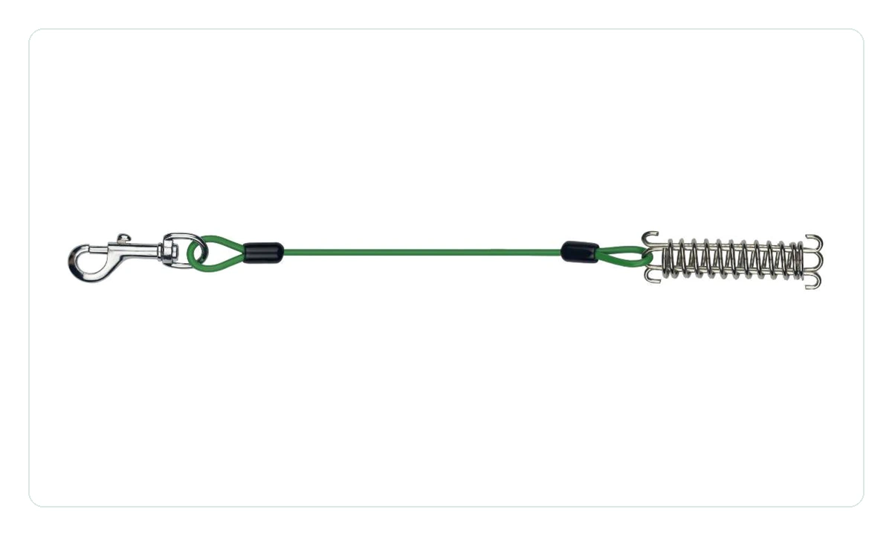
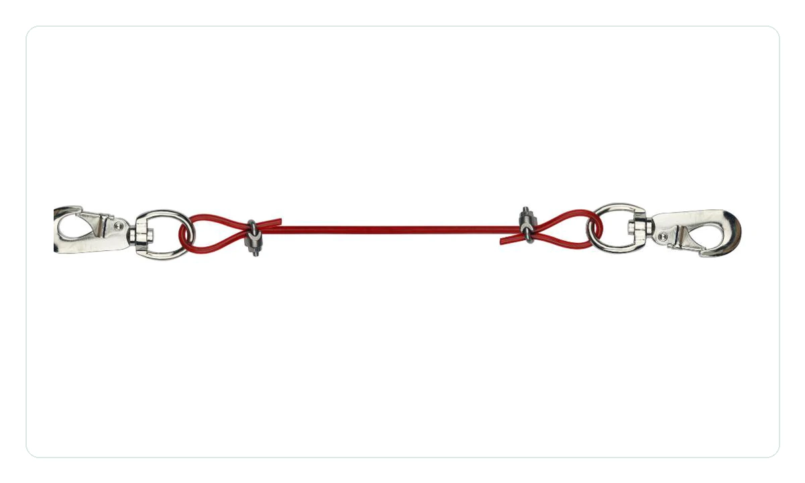
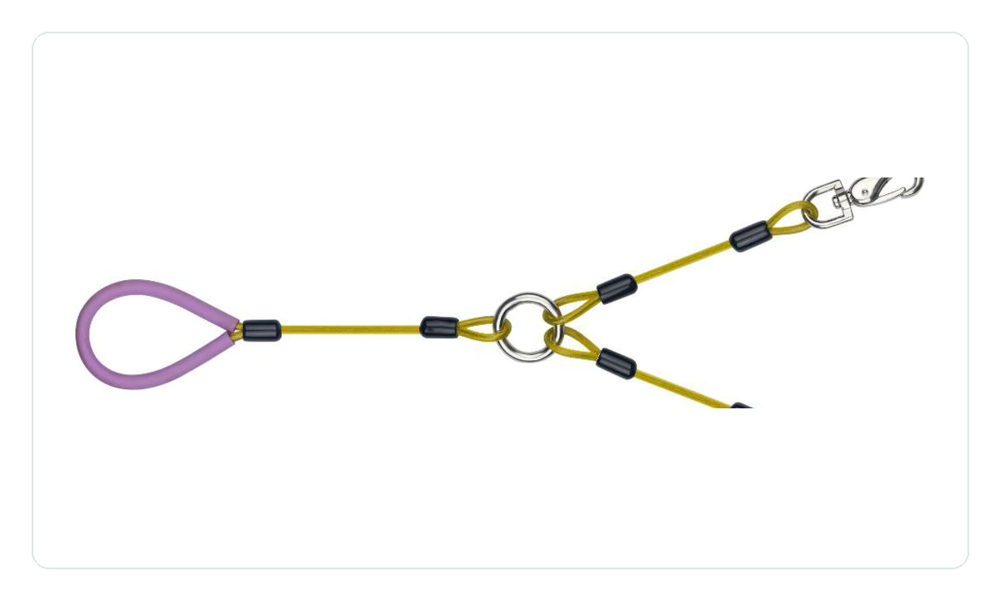
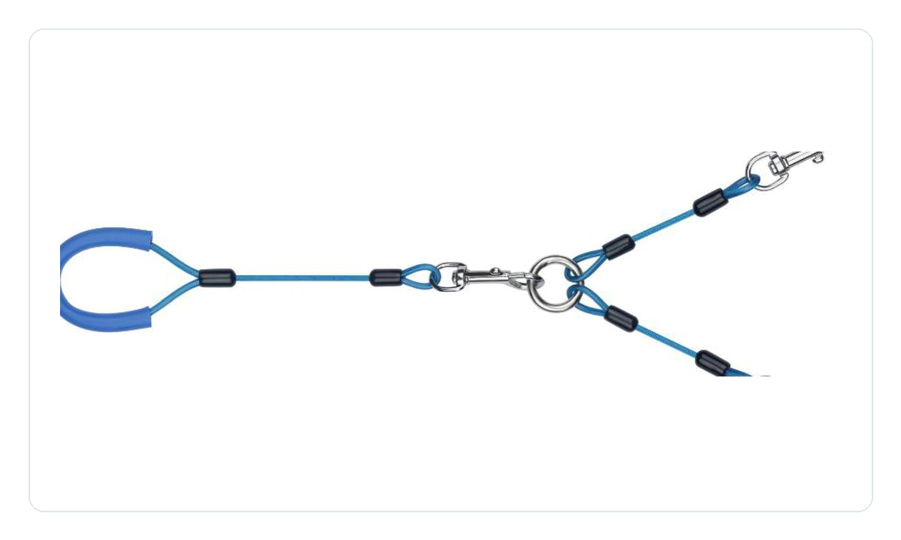
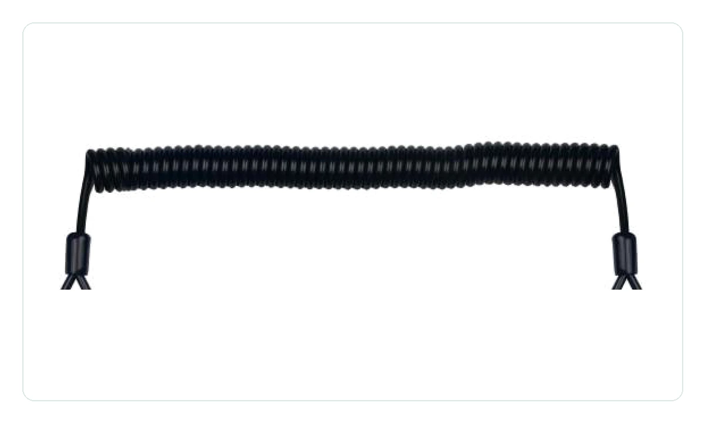
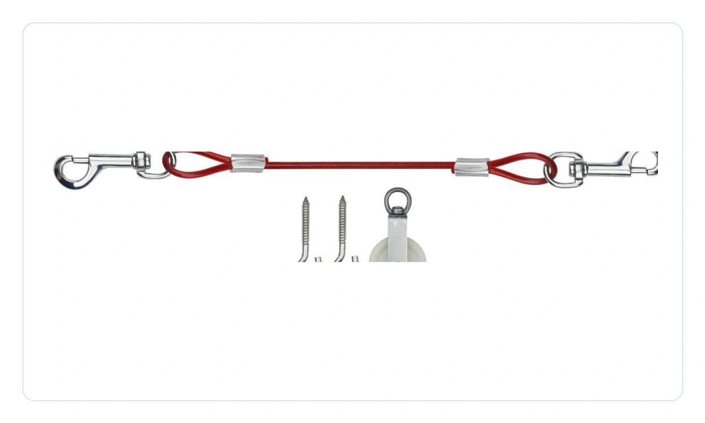
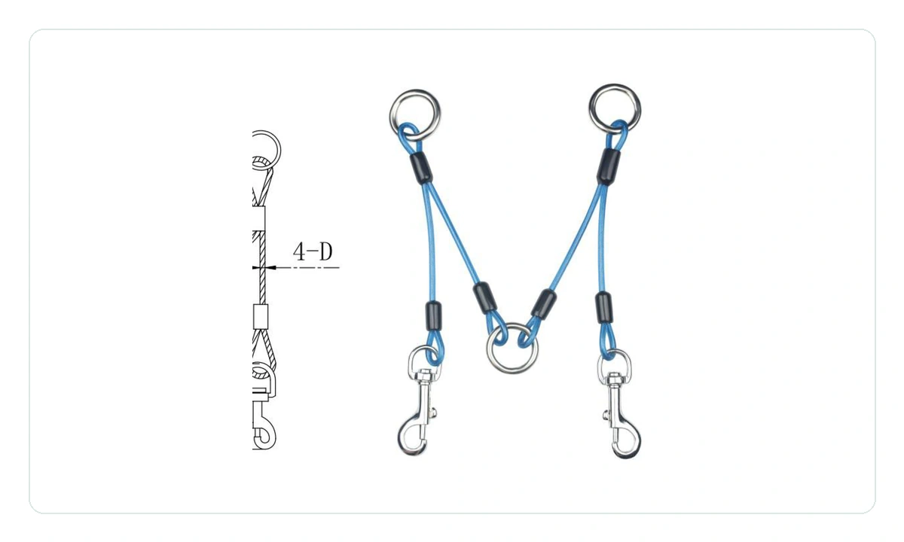

Speaker Hardware Safety Cables
Anti-loss rope and safety tether assemblies for professional audio hardware.
We manufacture custom stainless steel wire rope assemblies used to retain speaker accessories, secure removable hardware, and add secondary safety connections for PA, line array, amplifier, and installation audio products.

Speaker SafetySecondary retention cables for cabinets, brackets, and accessories
Anti-Loss DesignTethers for knobs, pins, covers, remote accessories, and removable parts
OEM CustomLength, cable diameter, coating color, end fittings, and packaging
Audio Applications
Small cable assemblies that protect removable audio hardware.
These products are selected from the rope catalog and repositioned for professional audio use. They are suitable for OEM projects where a brand needs a compact safety lanyard, anti-loss cable, or retainer assembly made to drawing or sample.
Selected Product Types
Audio safety rope and anti-loss cable options.
All products can be adjusted by cable diameter, total length, coating color, end fitting, loop size, snap hook type, and packing method.

Anti-Loss Cable
Loop-End Safety Tether
Compact loop and ring assembly for retaining covers, plugs, pins, or removable audio accessories.

Snap Hook Assembly
Dual Snap Hook Tether
Quick-connect rope assembly for service panels, bracket accessories, or temporary stage hardware.

Shock Buffer
Spring Buffer Safety Cable
Spring-assisted retainer cable for small accessories that need limited movement and controlled tension.

Hardware Retainer
Locking Hardware Tether
Metal end fittings and crimps for stronger retention on rack, cabinet, and installation audio hardware.

Multi-Point Tether
Split-Y Safety Lanyard
One main loop with two retained ends for paired pins, dual covers, or two-point speaker accessories.

Accessory Harness
Three-Point Retainer Cable
Branch cable layout for accessory kits where several small parts need to stay with the main product.

Elastic Retention
Coiled Safety Lanyard
Flexible coiled tether option for portable audio products and removable covers that need extension.

Mounted Retainer
Bracket-Mounted Retainer
Retainer assembly with mounting hooks or plates for cabinet accessories, service parts, and covers.

Dual-Leg Harness
Dual-Leg Safety Harness
Two-leg cable layout for balanced retention on brackets, mount hardware, or paired installation points.
Custom Manufacturing
Designed around your speaker hardware, not a fixed catalog size.
Send your sample, drawing, target load, required length, and application photo. We can adjust fittings, sleeves, cable construction, coating color, and packaging for your audio product line.
- Cable
- Stainless steel, galvanized steel, PVC coated cable
- Diameter
- Common 1.0-6.0 mm, custom sizes available
- Ends
- Loop, ring, snap hook, screw terminal, eyelet, custom fitting
- Finish
- Natural metal, black coating, color sleeve, plated hardware
- Packaging
- Bulk pack, kit pack, label, carton, export packaging
RFQ Guide
Tell us the audio part you need to retain.
For faster quoting, include the audio product type, retained part, expected cable length, end fitting style, annual quantity, and any load or safety requirement.
Useful quote information
- Application photo or drawing of the speaker / amplifier hardware
- Cable length, cable diameter, coating color, and end fittings
- Expected quantity, packaging method, and target market
- Samples or reference catalog product number if available